102. 二叉树的层次遍历
https://leetcode-cn.com/problems/binary-tree-level-order-traversal/description/
题目
给定一个二叉树，返回其按层次遍历的节点值。 （即逐层地，从左到右访问所有节点）。
例如:
给定二叉树: [3,9,20,null,null,15,7],
3
/ \
9 20
/ \
15 7
返回其层次遍历结果：
[
[3],
[9,20],
[15,7]
]
解题思路：
层次遍历，没啥好说的，就是本题需要将层次区分开来。因此传统的方法，需要做一些修订。用一个队列保存当前层次的所有节点。
每一轮遍历的时候，依次出队所有的节点，存入结果，并遍历出队的所有节点，如果有子节点则存入队列，等待下一轮遍历。
也就是有两层的遍历，用一个临时的队列，保存中间结果
代码：
public List<List<Integer>> levelOrder(TreeNode root) {
Queue<TreeNode> queue = new ArrayDeque<>();
if (root != null) {
queue.add(root);
}
List<List<Integer>> result = new ArrayList<>();
while(!queue.isEmpty()){
List<Integer> ans = new ArrayList<>();
Queue<TreeNode> tempQueue = new ArrayDeque<>(queue);
while (!tempQueue.isEmpty()){
TreeNode node = tempQueue.poll();
ans.add(node.val);
}
tempQueue = new ArrayDeque<>(queue);
queue.clear();
while(!tempQueue.isEmpty()){
TreeNode node = tempQueue.poll();
if (node.left != null) {
queue.add(node.left);
}
if (node.right != null) {
queue.add(node.right);
}
}
result.add(ans);
}
return result;
}
122. 买卖股票的最佳时机 II
https://leetcode-cn.com/problems/best-time-to-buy-and-sell-stock-ii/description/
给定一个数组，它的第 i 个元素是一支给定股票第 i 天的价格。
设计一个算法来计算你所能获取的最大利润。你可以尽可能地完成更多的交易（多次买卖一支股票）。
注意：你不能同时参与多笔交易（你必须在再次购买前出售掉之前的股票）。
示例 1:
输入: [7,1,5,3,6,4]
输出: 7
解释: 在第 2 天（股票价格 = 1）的时候买入，在第 3 天（股票价格 = 5）的时候卖出, 这笔交易所能获得利润 = 5-1 = 4 。
随后，在第 4 天（股票价格 = 3）的时候买入，在第 5 天（股票价格 = 6）的时候卖出, 这笔交易所能获得利润 = 6-3 = 3 。
示例 2:
输入: [1,2,3,4,5]
输出: 4
解释: 在第 1 天（股票价格 = 1）的时候买入，在第 5 天 （股票价格 = 5）的时候卖出, 这笔交易所能获得利润 = 5-1 = 4 。
注意你不能在第 1 天和第 2 天接连购买股票，之后再将它们卖出。
因为这样属于同时参与了多笔交易，你必须在再次购买前出售掉之前的股票。
示例 3:
输入: [7,6,4,3,1]
输出: 0
解释: 在这种情况下, 没有交易完成, 所以最大利润为 0。
解题思路：
dp题。尝试写出状态转移方程。
设s[i]，第i天股票的价格
1) dp[i], 到第i天，最优的股票收益。
dp[i] = max {max{ s[i] - s[j] + dp[j - 1]} j = 1...i - 1,
dp[i - 1]代表不卖，以及s[i] < s[j]的情况,算法复杂度O(n2)
代码：
public int maxProfit(int[] prices) {
if (prices.length == 0){
return 0;
}
int[] dp = new int[prices.length];
for (int i = 1 ; i < prices.length; i++){
int max = dp[i - 1];
for (int j = 0; j < i; j++){
int temp = prices[i] - prices[j];
temp = temp < 0 ? 0 : temp;
if (j > 0) {
if (temp > 0) {
temp += dp[j - 1];
} else {
temp = dp[j - 1];
}
}
if (temp > max){
max = temp;
}
}
dp[i] = max;
}
return dp[prices.length - 1];
}
169. 求众数
https://leetcode-cn.com/problems/majority-element/description/
给定一个大小为 n 的数组，找到其中的众数。众数是指在数组中出现次数大于 ⌊ n/2 ⌋ 的元素。
你可以假设数组是非空的，并且给定的数组总是存在众数。
示例 1:
输入: [3,2,3]
输出: 3
示例 2:
输入: [2,2,1,1,1,2,2]
输出: 2
解题思路：
我的思路是，排序，然后逐一比对。直到找到众数为止。但是直觉告诉我应该有更优雅的方式。
这是一道求众数的问题，有很多种解法，其中我感觉比较好的有两种，一种是用哈希表，这种方法需要O(n)的时间和空间，另一种是用一种叫摩尔投票法 Moore Voting，需要O(n)的时间和O(1)的空间，比前一种方法更好。这种投票法先将第一个数字假设为众数，然后把计数器设为1，比较下一个数和此数是否相等，若相等则计数器加一，反之减一。然后看此时计数器的值，若为零，则将当前值设为候选众数。以此类推直到遍历完整个数组，当前候选众数即为该数组的众数。不仔细弄懂摩尔投票法的精髓的话，过一阵子还是会忘记的，首先要明确的是这个叼炸天的方法是有前提的，就是数组中一定要有众数的存在才能使用，下面我们来看本算法的思路，这是一种先假设候选者，然后再进行验证的算法。我们现将数组中的第一个数假设为众数，然后进行统计其出现的次数，如果遇到同样的数，则计数器自增1，否则计数器自减1，如果计数器减到了0，则更换当前数字为候选者。这是一个很巧妙的设定，也是本算法的精髓所在，为啥遇到不同的要计数器减1呢，为啥减到0了又要更换候选者呢？首先是有那个强大的前提存在，一定会有一个出现超过半数的数字存在，那么如果计数器减到0了话，说明目前不是候选者数字的个数已经跟候选者的出现个数相同了，那么这个候选者已经很weak，不一定能出现超过半数，我们选择更换当前的候选者。那有可能你会有疑问，那万一后面又大量的出现了之前的候选者怎么办，不需要担心，如果之前的候选者在后面大量出现的话，其又会重新变为候选者，直到最终验证成为正确的众数，佩服算法的提出者啊。

32. 最长有效括号
https://leetcode-cn.com/problems/longest-valid-parentheses/description/
给定一个只包含 '(' 和 ')' 的字符串，找出最长的包含有效括号的子串的长度。
示例 1:
输入: "(()"
输出: 2
解释: 最长有效括号子串为 "()"
示例 2:
输入: ")()())"
输出: 4
解释: 最长有效括号子串为 "()()"
代码：
public int longestValidParentheses(String s) {
int[] dp = new int[s.length()];
int max = 0;
for (int i = 1; i < s.length(); i++){
if (s.charAt(i) == '('){
dp[i] = 0;
}else{
if (dp[i - 1] != 0) {
int index = i - dp[i - 1] - 1;
if (index >= 0 && s.charAt(index) == '(') {
dp[i] = dp[i - 1] + 2;
if (index - 1 >= 0 ){
dp[i] += dp[index - 1];
}
}
}
if (s.charAt(i - 1) == '('){
if (i >= 2) {
dp[i] = dp[i] > dp[i - 2] + 2 ? dp[i] : dp[i - 2] + 2;
}else{
dp[i] = 2;
}
}
if (max < dp[i]){
max = dp[i];
}
}
}
return max;
}
39. 组合总和
https://leetcode-cn.com/problems/combination-sum/description/
给定一个无重复元素的数组 candidates 和一个目标数 target ，找出 candidates 中所有可以使数字和为 target 的组合。
candidates 中的数字可以无限制重复被选取。
说明：
所有数字（包括 target）都是正整数。
解集不能包含重复的组合。
示例 1:
输入: candidates = [2,3,6,7], target = 7,
所求解集为:
[
[7],
[2,2,3]
]
示例 2:
输入: candidates = [2,3,5], target = 8,
所求解集为:
[
[2,2,2,2],
[2,3,3],
[3,5]
]
题目分析：
- 一看到这道题，就感觉要用递归来做，应该是回溯算法。百度证实无误。
- 然后自己还没有生写过回溯。想了一会儿，结果不对，和正确解法做了一下比较，修改了一下自己的算法。标答是C++的，在java上需要修改一下，一些特别的地方要处理一下。
直接上代码：
/**
* 核心算法
* @param candidates 数组
* @param target 当前递归子问题需要计算的target
* @param start 开始查找的index
* @param result 当前递归的result数组
* @param ans 最后的答案
*/
private void findOne(int[] candidates, int target, int start, List<Integer> result, List<List<Integer>> ans){
if (target == 0){
List<Integer> list = new ArrayList<>(result); //这里需要新开一个数组，否则会一直复用这个对象，导致结果不对
ans.add(list);
return;
}else if(target < candidates[start]){
return; //不符合的结果，不处理。
}else{
for (int i = start; i < candidates.length; i++){
result.add(candidates[i]);
findOne(candidates, target - candidates[i], i, result, ans);
result.remove(result.size() - 1);
//这里有点像树的遍历，这里就是要一个节点和不要一个节点的分支。然后可以重复使用元素，所以递归子问题，仍然从i开始。
}
}
}
public List<List<Integer>> combinationSum(int[] candidates, int target) {
List<List<Integer>> ans = new ArrayList<>();
Arrays.sort(candidates); //题目没有说排好序的数组，所以这里要先拍个序
findOne(candidates, target, 0, new ArrayList<>(), ans);
return ans;
}
JSON反序列化乱序的问题
What
将Object 转成JSON时，会出现key值的顺序与原顺序不一致的情况（新的顺序按照字母序重新排序）
Why
原因在于HashMap，当用fastjson反序列化时，会使用HashMap。而HashMap底层会根据map中key的hashcode和equals重新排序。
How
使用LinkedHashMap替换HashMap。
JSONObject jsonObj = new JSONObject(true);
Map m= jsonObj.parseObject(json, LinkedHashMap.class);
这个方法可以保证第一层的map按照原顺序呗反序列化。想要递归所有层都按照原顺序需要使用
HashMap m=JSON.parseObject(json,LinkedHashMap.class,Feature.OrderedField)；
PS
Q: jackson 会乱序吗？
A: 不会
参考资料
https://github.com/alibaba/fastjson/issues/954
https://blog.csdn.net/yj1499945/article/details/78260650
Java中的代理模式
1. 静态代理和动态代理
本章节参考了https://www.ibm.com/developerworks/cn/java/j-lo-proxy-pattern/
1.1. 定义
静态代理和动态代理指的是实现代理模式的方式。静态模式意思是所有的代码是静态写好的。而动态代理则相对，部分代码是动态生成的。在动态代理中还分为JDK动态代理和CGLib动态代理。
1.2. 关键实现
1.2.1. 静态代理
静态代理是基于接口实现的，他要求真实类和代理类实现同样的接口。
public interface IDBQuery {
String request();
}
public class DBQuery implements IDBQuery{
public DBQuery(){
try{
Thread.sleep(1000);//假设数据库连接等耗时操作
}catch(InterruptedException ex){
ex.printStackTrace();
}
}
@Override
public String request() {
// TODO Auto-generated method stub
return "request string";
}
}
public class DBQueryProxy implements IDBQuery{
private DBQuery real = null;
@Override
public String request() {
// TODO Auto-generated method stub
//在真正需要的时候才能创建真实对象，创建过程可能很慢
if(real==null){
real = new DBQuery();
}//在多线程环境下，这里返回一个虚假类，类似于 Future 模式
return real.request();
}
}
public class Main {
public static void main(String[] args){
IDBQuery q = new DBQueryProxy(); //使用代里
q.request(); //在真正使用时才创建真实对象
}
}
1.2.2. JDK代理
当使用JDK代理时，一个最直观的变化就是代理类不需要和真实类实现同一个接口了。取而代之的是代理类实现了InvocationHandler，并Override了invoke方法。在方法里可以统一对实现方法做处理（方法调用前，方法调用后）。
import java.lang.reflect.InvocationHandler;
import java.lang.reflect.Method;
public class DBQueryHandler implements InvocationHandler{
IDBQuery realQuery = null;//定义主题接口
@Override
public Object invoke(Object proxy, Method method, Object[] args)
throws Throwable {
// TODO Auto-generated method stub
//如果第一次调用，生成真实主题
if(realQuery == null){
realQuery = new DBQuery();
}
//method.invoke(target, args); 执行调用的方法。
//返回真实主题完成实际的操作
return realQuery.request();
}
public static IDBQuery createProxy(){
IDBQuery proxy = (IDBQuery)Proxy.newProxyInstance(ClassLoader.getSystemClassLoader(), new Class[]{IDBQuery.class}, new DBQueryHandler()); // 注意，生成的代理类实例被强转为IDBQuery
return proxy;
}
}
1.2.3. CGLib代理
CGLib一个直观的最大的特点就是真实类无需实现接口（当然实现了也没关系）。
接口类
public interface BookProxy {
public void addBook();
}
实现类
//该类并没有申明 BookProxy 接口
public class BookProxyImpl {
public void addBook() {
System.out.println("增加图书的普通方法...");
}
}
代理类
import java.lang.reflect.Method;
import net.sf.cglib.proxy.Enhancer;
import net.sf.cglib.proxy.MethodInterceptor;
import net.sf.cglib.proxy.MethodProxy;
public class BookProxyLib implements MethodInterceptor {
private Object target;
/**
* 创建代理对象
*
* @param target
* @return
*/
public Object getInstance(Object target) {
this.target = target;
Enhancer enhancer = new Enhancer();
enhancer.setSuperclass(this.target.getClass());
// 回调方法
enhancer.setCallback(this);
// 创建代理对象
return enhancer.create();
}
@Override
// 回调方法
public Object intercept(Object obj, Method method, Object[] args,
MethodProxy proxy) throws Throwable {
System.out.println("事物开始");
proxy.invokeSuper(obj, args);
System.out.println("事物结束");
return null;
}
}
调用方法
public class TestCglib {
public static void main(String[] args) {
BookProxyLib cglib=new BookProxyLib();
BookProxyImpl bookCglib=(BookProxyImpl)cglib.getInstance(new BookProxyImpl());
bookCglib.addBook(); //可以看到BookProxyLib并没有声明BookProxy接口，但是仍然可以调用addBook方法
}
}
1.3. 区别和共同点
静态代理是通过在代码中显式定义一个业务实现类一个代理，在代理类中对同名的业务方法进行包装，用户通过代理类调用被包装过的业务方法；
JDK动态代理是通过接口中的方法名，在动态生成的代理类中调用业务实现类的同名方法；
CGlib动态代理是通过继承业务类，生成的动态代理类是业务类的子类，通过重写业务方法进行代理；
https://blog.csdn.net/neosmith/article/details/51072840
2. 实际应用场景举例
todo:没有理解cglib不用真实类实现接口的意义。因为真实类没有实现接口，但是暴露了public的方法。这和直接调用有啥区别？
另外cglib的试用场景，真实类没有实现的接口意义何在？如果没有接口来规范统一的调用逻辑，例如一堆的实现类实现了A接口，因此必须实现A接口中定义的B方法。这样才有意义吧？
查看spring源码，了解spring中，cglib的使用方法，来解答上述疑问。
代理模式的意义
- 有代理，便于解耦
- 静态代理太麻烦，每个都要
- JDK代理受限于要实现接口
- CGLib不需要实现接口，看上去无法统一接口的方法，但是可能是用在一些common的方法，例如Object的方法。用在类创建时刻。
- 另外让方法运行只是最基本的，代理模式的最大用途是管理原方法的运行前，后，时（切面，AOP）。
3. Spring AOP和动态代理
4. OC中的动态代理模式浅谈
5. CGLib和JDK代理的性能对比
Java序列化的那些事
1. 什么是序列化和反序列化
（1）Java序列化是指把Java对象转换为字节序列的过程，而Java反序列化是指把字节序列恢复为Java对象的过程；
（2）序列化：对象序列化的最主要的用处就是在传递和保存对象的时候，保证对象的完整性和可传递性。序列化是把对象转换成有序字节流，以便在网络上传输或者保存在本地文件中。序列化后的字节流保存了Java对象的状态以及相关的描述信息。序列化机制的核心作用就是对象状态的保存与重建。
（3）反序列化：客户端从文件中或网络上获得序列化后的对象字节流后，根据字节流中所保存的对象状态及描述信息，通过反序列化重建对象。
（4）本质上讲，序列化就是把实体对象状态按照一定的格式写入到有序字节流，反序列化就是从有序字节流重建对象，恢复对象状态。
2、为什么需要序列化与反序列化
我们知道，当两个进程进行远程通信时，可以相互发送各种类型的数据，包括文本、图片、音频、视频等， 而这些数据都会以二进制序列的形式在网络上传送。
那么当两个Java进程进行通信时，能否实现进程间的对象传送呢？答案是可以的！如何做到呢？这就需要Java序列化与反序列化了！
换句话说，一方面，发送方需要把这个Java对象转换为字节序列，然后在网络上传送；另一方面，接收方需要从字节序列中恢复出Java对象。
当我们明晰了为什么需要Java序列化和反序列化后，我们很自然地会想Java序列化的好处。其好处一是实现了数据的持久化，通过序列化可以把数据永久地保存到硬盘上（通常存放在文件里），二是，利用序列化实现远程通信，即在网络上传送对象的字节序列。
总的来说可以归结为以下几点：
（1）永久性保存对象，保存对象的字节序列到本地文件或者数据库中；
（2）通过序列化以字节流的形式使对象在网络中进行传递和接收；
（3）通过序列化在进程间传递对象；
3、实现Java对象序列化与反序列化的方法
假定一个User类，它的对象需要序列化，可以有如下三种方法：
（1）若User类仅仅实现了Serializable接口，则可以按照以下方式进行序列化和反序列化
ObjectOutputStream采用默认的序列化方式，对User对象的非transient的实例变量进行序列化。
ObjcetInputStream采用默认的反序列化方式，对对User对象的非transient的实例变量进行反序列化。
（2）若User类仅仅实现了Serializable接口，并且还定义了readObject(ObjectInputStream in)和writeObject(ObjectOutputSteam out)，则采用以下方式进行序列化与反序列化。
ObjectOutputStream调用User对象的writeObject(ObjectOutputStream out)的方法进行序列化。
ObjectInputStream会调用User对象的readObject(ObjectInputStream in)的方法进行反序列化。
（3）若User类实现了Externalnalizable接口，且User类必须实现readExternal(ObjectInput in)和writeExternal(ObjectOutput out)方法，则按照以下方式进行序列化与反序列化。
ObjectOutputStream调用User对象的writeExternal(ObjectOutput out))的方法进行序列化。
ObjectInputStream会调用User对象的readExternal(ObjectInput in)的方法进行反序列化。
4. serialVersionUID
序列化运行时使用一个称为 serialVersionUID 的版本号与每个可序列化类相关联，该序列号在反序列化过程中用于验证序列化对象的发送者和接收者是否为该对象加载了与序列化兼容的类。为它赋予明确的值。显式地定义serialVersionUID有两种用途：
在某些场合，希望类的不同版本对序列化兼容，因此需要确保类的不同版本具有相同的serialVersionUID；
在某些场合，不希望类的不同版本对序列化兼容，因此需要确保类的不同版本具有不同的serialVersionUID。
参考资料
原文链接：https://blog.csdn.net/xlgen157387/article/details/79840134
https://blog.csdn.net/u014750606/article/details/80040130
RAC中的宏定义魔法
https://onevcat.com/2014/01/black-magic-in-macro/
1. #的作用
2. ##的作用
3. VA_ARGS的作用
4. RAC()
4.1 函数功能
RAC(),有两种调用方式，一个是两个参数，一个是三个参数的。函数的第一个参数代表着要绑定的对象，第二个参数要绑定的对象的属性，第三个参数代表当追踪的结果为nil时，应该赋予的值。
这里就有一个很有趣的问题，ReactiveCocoa是如何做到用一个函数宏，自动识别参数个数，并调用正确的函数的呢？
Realm学习笔记
- Useful文章
https://www.jianshu.com/p/6704afc62d6c
1. 模型定义
参照官网的demo，建立如下两个类：
@interface Dog : RLMObject
@property NSString *name;
@property NSData *picture;
@property NSInteger age;
@end
@implementation Dog
@end
RLM_ARRAY_TYPE(Dog)
@interface Person : RLMObject
@property NSString *name;
@property RLMArray<Dog *><Dog> *dogs;
@end
@implementation Person
@end
tips
1. 需要继承RLMObject
2. 所有的属性都不需要写任何的描述符，原子性，strong, assign等
3. Array类型需要用RLMArray
4. 使用Array 需要定义 RLM_ARRAY_TYPE , 这个定义放在类前类后都可以。
2.CRUD
Realm采用了MVCC设计架构，因此读写操作是不互斥的。但是写操作最好在一个Seperate thread中执行，否则会降低效率。
2.1 创建（Create）
// (1) Create a Dog object and then set its properties
Dog *myDog = [[Dog alloc] init];myDog.name = @"Rex";myDog.age = 10;
// (2) Create a Dog object from a dictionary
Dog *myOtherDog = [[Dog alloc] initWithValue:@{@"name" : @"Pluto", @"age" : @3}];
// (3) Create a Dog object from an array
Dog *myThirdDog = [[Dog alloc] initWithValue:@[@"Pluto", @3]];
写入数据库
// Get the default Realm
RLMRealm *realm = [RLMRealm defaultRealm];
// You only need to do this once (per thread)
// Add to Realm with transaction
[realm beginWriteTransaction];
[realm addObject:province];
[realm commitWriteTransaction];
2.2 查询（Retrieve）
// 使用断言字符串查询
RLMResults<ProvinceEntity *> *provinceArray = [ProvinceEntity objectsWhere:@"shortName = '江苏'"];
// 使用 NSPredicate 查询
NSPredicate *pred = [NSPredicate predicateWithFormat:@"shortName = '江苏'"];
provinceArray = [ProvinceEntity objectsWithPredicate:pred];
如果有多条件的话，可以用and，也可以分布查询，从查询结果中再做查询，支持链式查询：
RLMResults<Dog *> *tanDogs = [Dog objectsWhere:@"color = '棕黄色'"];
RLMResults<Dog *> *tanDogsWithBNames = [tanDogs objectsWhere:@"name BEGINSWITH '大'"];
RLMResults允许您指定一个排序标准，从而可以根据一个或多个属性进行排序。比如说，下列代码将上面例子中返回的狗狗根据名字升序进行排序：
// 排序名字以“大”开头的棕黄色狗狗
RLMResults<Dog *> *sortedDogs = [[Dog objectsWhere:@"color = '棕黄色' AND name BEGINSWITH '大'"] sortedResultsUsingProperty:@"name" ascending:YES];
2.3 更新（Update）
- 你可以找到具体的一条数据然后去更新：
RLMResults<ProvinceEntity *>* provinceArray=[ProvinceEntity allObjects];
[[RLMRealm defaultRealm] transactionWithBlock:^{
ProvinceEntity *province=[provinceArray firstObject];
province.shortName=@"浙江";
}];
- 你也可以设置一个主键，根据主键去更新，更新需要拥有一个主键---Primary Keys：
// Creating a book with the same primary key as a previously saved
bookBook *cheeseBook = [[Book alloc] init];
cheeseBook.title = @"Cheese recipes";
cheeseBook.price = @9000;
cheeseBook.id = @1;
// Updating book with id = 1
[realm beginWriteTransaction];
[realm addOrUpdateObject:cheeseBook];
[realm commitWriteTransaction];
2.4 删除(Delete)
- 单条记录删除
// Delete an object with a transaction
[realm beginWriteTransaction];
[realm deleteObject:cheeseBook];
[realm commitWriteTransaction];
- 多条记录删除
[[RLMRealm defaultRealm] transactionWithBlock:^{
[[RLMRealm defaultRealm] deleteObjects:result];
}];
- 全部删除：
// Delete an object with a transaction
[[RLMRealm defaultRealm] transactionWithBlock:^{
[[RLMRealm defaultRealm] deleteAllObjects];
}];
3.进阶使用
- 非空字段(Required properties)
By default, NSString *, NSData *, and NSDate * properties allow you to set them to nil. If you want to require that a value be present, override the +requiredProperties method on your RLMObject subclass.
For example, with the following model definition, trying to set the person’s name to nil will throw an exception, but setting their birthday to nil is allowed:
@interface Person : RLMObject
@property NSString *name;
@property NSDate *birthday;
@end
@implementation Person
+ (NSArray *)requiredProperties {
return @[@"name"];
}
@end
例外：RLMObject subclass properties always can be nil, and thus cannot be included in requiredProperties. and RLMArray does not support storing nil.
- 主键
Override +primaryKey to set the model’s primary key. Declaring a primary key allows objects to be looked up and updated efficiently and enforces uniqueness for each value. Once an object with a primary key is added to a Realm, the primary key cannot be changed.
@interface Person : RLMObject
@property NSInteger id;
@property NSString *name;
@end
@implementation Person
+ (NSString *)primaryKey {
return @"id";
}
@end
- 索引字段
To index a property, override +indexedProperties. Like primary keys, indexes make writes slightly slower, but makes queries using comparison operators faster. (It also makes your Realm file slightly larger, to store the index.) It’s best to only add indexes when you’re optimizing the read performance for specific situations.
@interface Book : RLMObject
@property float price;
@property NSString *title;
@end
@implementation Book
+ (NSArray *)indexedProperties {
return @[@"title"];
}
@end
- 忽略字段
If you don’t want to save a field in your model to its Realm, override +ignoredProperties. Realm won’t interfere with the regular operation of these properties; they’ll be backed by ivars, and you can freely override their setters and getters.
@interface Person : RLMObject
@property NSInteger tmpID;
@property (readonly) NSString *name; // read-only properties are automatically ignored
@property NSString *firstName;
@property NSString *lastName;
@end
@implementation Person
+ (NSArray *)ignoredProperties {
return @[@"tmpID"];
}
- (NSString *)name {
return [NSString stringWithFormat:@"%@ %@", self.firstName, self.lastName];
}
@end
- 默认值
Override +defaultPropertyValues to provide default values every time an object is created.
@interface Book : RLMObject
@property float price;
@property NSString *title;
@end
@implementation Book
+ (NSDictionary *)defaultPropertyValues {
return @{@"price" : @0, @"title": @""};
}
@end
4. 特性
5. 疑问
为什么要这样直接继承不可以吗？是不支持吗？
// Base Model
@interface Animal : RLMObject
@property NSInteger age;
@end
@implementation Animal
@end
// Models composed with Animal
@interface Duck : RLMObject
@property Animal *animal;
@property NSString *name;
@end
@implementation Duck
@end
@interface Frog : RLMObject
@property Animal *animal;
@property NSDate *dateProp;
@end
@implementation Frog
@end
// Usage
Duck *duck = [[Duck alloc] initWithValue:@{@"animal" : @{@"age" : @(3)}, @"name" : @"Gustav" }];
一道LeetCode线程题引出Java线程协作的经典案例
1. 题目
1115. 交替打印FooBar
我们提供一个类：
class FooBar {
public void foo() {
for (int i = 0; i < n; i++) {
print("foo");
}
}
public void bar() {
for (int i = 0; i < n; i++) {
print("bar");
}
}
}
两个不同的线程将会共用一个 FooBar 实例。其中一个线程将会调用 foo() 方法，另一个线程将会调用 bar() 方法。
请设计修改程序，以确保 "foobar" 被输出 n 次。
示例 1:
输入: n = 1
输出: "foobar"
解释: 这里有两个线程被异步启动。其中一个调用 foo() 方法, 另一个调用 bar() 方法，"foobar" 将被输出一次。
示例 2:
输入: n = 2
输出: "foobarfoobar"
解释: "foobar" 将被输出两次。
来源：力扣（LeetCode）
链接：https://leetcode-cn.com/problems/print-foobar-alternately
著作权归领扣网络所有。商业转载请联系官方授权，非商业转载请注明出处。
2. 分析
本题有两个要求
- 顺序性，即foo要在bar之前打印，需要考虑先执行print bar的情况。
- 交替性，foo和bar需要轮流打印。
2.1. 方案一（基于volatile）
用一个变量来标记当前打印的是foo还是bar。这样就知道下一个操作需要打印foo还是bar。这个变量需要在线程间进行共享。共享没有问题，FooBar内的变量对同一个对象是可以访问的。但是需要能够及时同步。因此我们需要一个volatile变量。
1.0版本:
class FooBar {
private int n;
volatile boolean flag = true;
public FooBar(int n) {
this.n = n;
}
public void foo(Runnable printFoo) throws InterruptedException {
for (int i = 0; i < n; i++) {
while (!flag){
}
// printFoo.run() outputs "foo". Do not change or remove this line.
printFoo.run();
flag = false;
}
}
public void bar(Runnable printBar) throws InterruptedException {
for (int i = 0; i < n; i++) {
// printBar.run() outputs "bar". Do not change or remove this line.
while (flag){
}
printBar.run();
flag = true;
}
}
}
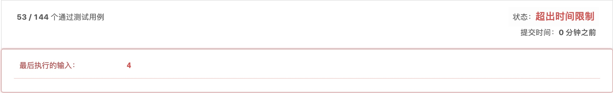
提交，超时了。为啥呢？
考虑CPU单核的情况，while (flag){}如果是bar线程先运行，将会不停执行while。foo线程无法抢占时间片，自然无法开始第一步print foo了。在多核环境下，虽然不会造成另一线程无法抢占时间片的问题，但是while循环是很耗时的，占用大量CPU资源，这也会使得运行时间变长而超时。
基于这样的分析，修改一下，增加Thread.sleep()，每次循环的时候，休眠一会儿。
2.0版本:
class FooBar {
private int n;
volatile boolean flag = true;
public FooBar(int n) {
this.n = n;
}
public void foo(Runnable printFoo) throws InterruptedException {
for (int i = 0; i < n; i++) {
while (!flag){
Thread.sleep(20);
}
// printFoo.run() outputs "foo". Do not change or remove this line.
printFoo.run();
flag = false;
}
}
public void bar(Runnable printBar) throws InterruptedException {
for (int i = 0; i < n; i++) {
// printBar.run() outputs "bar". Do not change or remove this line.
while (flag){
Thread.sleep(20);
}
printBar.run();
flag = true;
}
}
}
提交，进步了一点。还是超时。
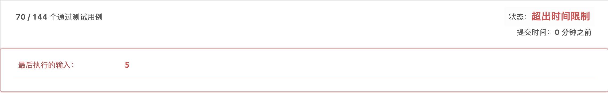
我们已经把休眠时间调整的很小了（20ms），希望程序可以快点切换到下一个打印。我们或许可以通过继续把休眠时间调整的更小来通过这道题，但是我们有一个更好的方法。Thread.yield()
3.0版本来了:
class FooBar {
private int n;
volatile boolean flag = true;
public FooBar(int n) {
this.n = n;
}
public void foo(Runnable printFoo) throws InterruptedException {
for (int i = 0; i < n; i++) {
while (!flag){
Thread.yield();
}
// printFoo.run() outputs "foo". Do not change or remove this line.
printFoo.run();
flag = false;
}
}
public void bar(Runnable printBar) throws InterruptedException {
for (int i = 0; i < n; i++) {
// printBar.run() outputs "bar". Do not change or remove this line.
while (flag){
Thread.yield();
}
printBar.run();
flag = true;
}
}
}
通过了！！！
摘抄自LeetCode评论：https://leetcode-cn.com/problems/print-foobar-alternately/solution/xian-cheng-ping-zhang-de-wen-ti-yi-ban-you-san-cho/
while循环是比较耗费性能的，可能会导致执行结果超时。可以通过Thread.yield进一步控制线程的执行，而非比较粗力度的循环。当某个线程调用yield()方法时，就会从运行状态转换到就绪状态后，CPU从就绪状态线程队列中只会选择与该线程优先级相同或者更高优先级的线程去执行。总之加上Thread.yield性能会更高一点，因此用时会更少
什么是Thread.yield()?
摘抄自：https://www.cnblogs.com/java-spring/p/8309931.html
Java线程中的Thread.yield( )方法，译为线程让步。顾名思义，就是说当一个线程使用了这个方法之后，它就会把自己CPU执行的时间让掉，
让自己或者其它的线程运行，注意是让自己或者其他线程运行，并不是单纯的让给其他线程。
yield()的作用是让步。它能让当前线程由“运行状态”进入到“就绪状态”，从而让其它具有相同优先级的等待线程获取执行权；但是，并不能保证在当前线程调用yield()之后，其它具有相同优先级的线程就一定能获得执行权；也有可能是当前线程又进入到“运行状态”继续运行！
举个例子：一帮朋友在排队上公交车，轮到Yield的时候，他突然说：我不想先上去了，咱们大家来竞赛上公交车。然后所有人就一块冲向公交车，
有可能是其他人先上车了，也有可能是Yield先上车了。
但是线程是有优先级的，优先级越高的人，就一定能第一个上车吗？这是不一定的，优先级高的人仅仅只是第一个上车的概率大了一点而已，
最终第一个上车的，也有可能是优先级最低的人。并且所谓的优先级执行，是在大量执行次数中才能体现出来的。
2.2 方案二 Semaphore
Semaphore
https://blog.csdn.net/hanchao5272/article/details/79780045
基于Semaphore的代码如下:
class FooBar {
private int n;
private Semaphore semaphore = new Semaphore(1);
private volatile boolean foo = false;
public FooBar(int n) {
this.n = n;
}
public void foo(Runnable printFoo) throws InterruptedException {
for (int i = 0; i < n; i++) {
semaphore.acquire();
// printFoo.run() outputs "foo". Do not change or remove this line.
printFoo.run();
foo = true;
}
}
public void bar(Runnable printBar) throws InterruptedException {
for (int i = 0; i < n; i++) {
while (!foo) {
}
// printBar.run() outputs "bar". Do not change or remove this line.
printBar.run();
foo = false;
semaphore.release();
}
}
}
作者：san-mu-32
链接：https://leetcode-cn.com/problems/print-foobar-alternately/solution/tong-guo-yi-ge-xin-hao-liang-kong-zhi-foohe-barde-/
来源：力扣（LeetCode）
著作权归作者所有。商业转载请联系作者获得授权，非商业转载请注明出处。
涉及多线程，运行时间并不稳定。和方案一类似，在while循环中加入Thread.yield()，速度有一定提升。
2.3. 方案三 notify && wait
https://www.jianshu.com/p/1dafbf42cc54
class FooBar {
private int n;
private volatile boolean isFoo;
public FooBar(int n) {
this.n = n;
}
public synchronized void foo(Runnable printFoo) throws InterruptedException {
for (int i = 0; i < n; i++) {
// synchronized (lock) {
// printFoo.run() outputs "foo". Do not change or remove this line.
printFoo.run();
isFoo = true;
this.notify();
if (i < n - 1) {
this.wait();
}
// }
}
}
public synchronized void bar(Runnable printBar) throws InterruptedException {
if (!isFoo) {
this.wait();
}
for (int i = 0; i < n; i++) {
// synchronized (lock) {
// printBar.run() outputs "bar". Do not change or remove this line.
printBar.run();
this.notify();
if (i < n - 1) {
this.wait();
}
// }
}
}
}
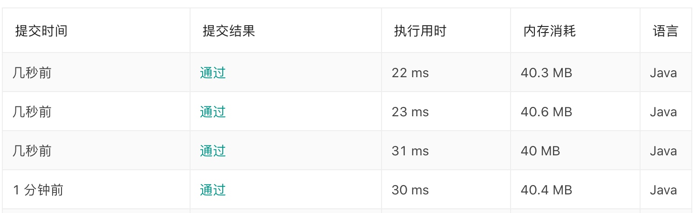
运行时间不稳定，应该是LeetCode的问题。
2.4. 方案四 CyclicBarrier
https://www.jianshu.com/p/333fd8faa56e
class FooBar {
private int n;
public FooBar(int n) {
this.n = n;
}
CyclicBarrier cb = new CyclicBarrier(2);
volatile boolean fin = true;
public void foo(Runnable printFoo) throws InterruptedException {
for (int i = 0; i < n; i++) {
while(!fin);
printFoo.run();
fin = false;
try {
cb.await();
} catch (BrokenBarrierException e) {
}
}
}
public void bar(Runnable printBar) throws InterruptedException {
for (int i = 0; i < n; i++) {
try {
cb.await();
} catch (BrokenBarrierException e) {
}
printBar.run();
fin = true;
}
}
}
作者：KevinBauer
链接：https://leetcode-cn.com/problems/print-foobar-alternately/solution/java-bing-fa-gong-ju-lei-da-lian-bing-by-kevinbaue/
来源：力扣（LeetCode）
著作权归作者所有。商业转载请联系作者获得授权，非商业转载请注明出处。
2.5. 方案五 CyclicBarrier + CountdownLatch
CyclicBarrier用于保证每一轮的foobar的打印。CountdownLatch用于保证单轮内，先打印foo，再打印bar。
import java.util.concurrent.CountDownLatch;
import java.util.concurrent.CyclicBarrier;
class FooBar {
private int n;
private CountDownLatch a;
private CyclicBarrier barrier;// 使用CyclicBarrier保证任务按组执行
public FooBar(int n) {
this.n = n;
a = new CountDownLatch(1);
barrier = new CyclicBarrier(2);// 保证每组内有两个任务
}
public void foo(Runnable printFoo) throws InterruptedException {
try {
for (int i = 0; i < n; i++) {
printFoo.run();
a.countDown();// printFoo方法完成调用countDown
barrier.await();// 等待printBar方法执行完成
}
} catch(Exception e) {}
}
public void bar(Runnable printBar) throws InterruptedException {
try {
for (int i = 0; i < n; i++) {
a.await();// 等待printFoo方法先执行
printBar.run();
a = new CountDownLatch(1); // 保证下一次依旧等待printFoo方法先执行
barrier.await();// 等待printFoo方法执行完成
}
} catch(Exception e) {}
}
}
作者：bonaluo
链接：https://leetcode-cn.com/problems/print-foobar-alternately/solution/javashi-yong-yi-ge-countdownlatchhe-yi-ge-cyclicba/
来源：力扣（LeetCode）
著作权归作者所有。商业转载请联系作者获得授权，非商业转载请注明出处。
3. 总结
本题需要解决两个问题。
- 两个线程必须先后执行，
- foo线程必须保证先执行。
为了解决这两个问题，5个方案选择了不同的方案组合。主要分为无锁和有锁两种方案。
为了解决foo线程先执行的问题。有使用volatile变量和CountdownLatch两种方法。volatile变量使用的是无锁的方案。通过一个死循环，组织bar线程先运行。优点是可以快速感知状态变换，无需线程切换。缺点是资源消耗大，需要使用Thread.yield()。否则会超时。CountdownLatch采用的是有锁的方案，因此会有线程的切换，单不会大量占用系统资源。在线程占用时间长的场景体验更佳。
为了让两个线程先后执行，需要在foo线程执行后挂起线程，让bar线程运行。在bar线程运行后，再让foo线程执行。无锁方案，继续用volatile变量即可。有锁方案则可以有几种选择。Semaphore，CyclicBarrier，notify&wait，Lock。
4. 引申
在 单核 / 单CPU 的系统上使用 自旋锁 是没有意义的，因为它就一个运行线程/核心，你占着不放，那么其他线程将得不到运行，其他线程得不到运行，这个锁就不能被解锁。换句话说，在 单核 / 单CPU 系统使用 自旋锁，除了浪费点时间外没有一点好处。这时如果让这个线程（记为线程A）休眠，其他线程就得以运行，然后就可能会解锁这个 自旋锁，线程A就可能在重新被唤醒后，如愿以偿的持有锁。
在 多核 / 多CPU 的系统上，特别是大量的线程只会短时间的持有锁的时候，这时如果使用 互斥锁，在使线程睡眠和唤醒上浪费大量的时间，也许会显著降低程序的运行性能。使用 自旋锁，线程可以充分利用系统调度程序分配的时间片(经常阻塞很短的时间，不用休眠，然后马上继续它们后面的工作了)，以达到更高的处理能力和吞吐量。
从@Transactional，@Async 失效说起
1、问题描述
当我们在同一个类中，调用一个被@Transactional,或@Async标注的方法时，这些注解是否会生效?
结论是不会。
2、原因
Spring采用动态代理(AOP)实现对bean的管理和切片，它为我们的每个class生成一个代理对象。只有在代理对象之间进行调用时，可以触发切面逻辑。
spring 在扫描bean的时候会扫描方法上是否包含@Async注解，如果包含，spring会为这个bean动态地生成一个子类（即代理类，proxy），代理类是继承原来那个bean的。此时，当这个有注解的方法被调用的时候，实际上是由代理类来调用的，代理类在调用时增加异步作用。然而，如果这个有注解的方法是被同一个类中的其他方法调用的，那么该方法的调用并没有通过代理类，而是直接通过原来的那个bean，所以就没有增加异步作用，我们看到的现象就是@Async注解无效。
当我们调用A的bean的a()方法的时候，也是被proxyA拦截，执行proxyA拦截，执行proxyA.a()（标记3），然而，由以上代码可知，这时候它调用的是objectA.a()，也就是由原来的bean来调用a()方法了，所以代码跑到了“标记1”。由此可见，“标记2”并没有被执行到，所以异步执行的效果也没有运行。
特别注意: 当Spring的事务在同一个类时，它的自我调用时事务将失效.
@Async
解决方案
方案一
在当前类中通过上下文获取自己的代理对象调用异步方法
直接@Autowired
方案二
基于 AopContext 暴露代理对象
EnableAspectJAutoProxy（exposeProxy=true）
AopContext.currentProxy()
https://mp.weixin.qq.com/s/m7p7AP_zT1JEZrxwmVISVQ
方案三
从外部类调用
从优化数据库查询速度谈起---MySQL优化相关知识梳理
0. 如何优化数据库查询速度？
优化数据库查询是一个老生常谈的问题。为了回答好这个问题，我们需要从以下几个方面来分析系统中的数据库查询问题。
- 数据库的设计是否合理。基于系统读大于写的场景，可以使用反范式化设计，减少join表操作。
- 数据库语句优化。使用的数据库语句是否合理。
- 索引优化。
1. 数据库的设计是否合理？
例如我们有一个设备信息表（t_device）：
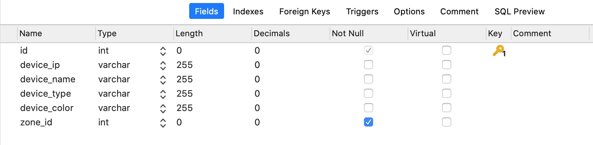
一个设备区域信息表（t_zone）：
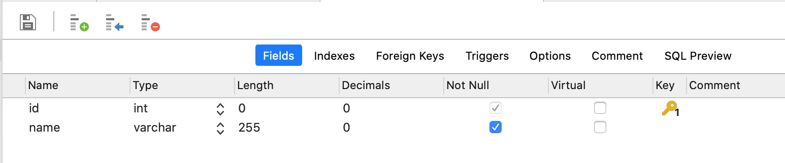
一个使用场景是，系统需要频繁的查询设备的基础信息，并且希望同时查出设备所属区域的名字。
为此，我们需要使用一个join操作来获得设备的区域名。
普遍的情况下，数据库设计应遵循三范式（3NF）设计。但是我们的系统如果存在查询请求多于插入和更新请求的情况。则可以考虑采用反范式化设计。
反范式化设计指的是违背第三范式设计。以上的设计符合第三范式设计的要求，即在device表中仅保存了zone_id，没有保存区域的名字，这使得我们需要通过join操作来获得区域信息。如果我们在t_device表中增加一个区域字段。
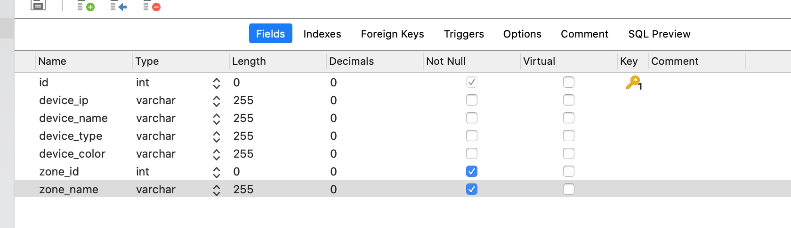
显然，我们不需要额外join，仅需要查询设备的基本信息表（t_device）就可以获取到设备的区域名。
1.1. 额外的问题
反范式化设计让我们减少了数据库的查询次数。达到提升的查询速度的目的。但是需要注意的是，经过改造后，设备的区域信息存放在了t_device, t_zone 两张表中。也就是如果需要更新设备的区域信息，我们需要同时修改这两张表中的数据。这也是反范式化设计核心理念，以空间换时间的体现。
2. SQL语句优化
网上可以搜到很多SQL语句的实战文章，其中大部分和索引有关系。一个高频的关键字就是避免全表扫描。本章主要介绍和索引无关（即不管是否建立索引都会有问题）的避免全表扫描的常见Tip。
1. 字段值中包含null
避免字段值中有null，可以使用一个默认值来代替null的含义。
2. 避免使用函数
如果需要使用函数应该在代码中提前计算好，避免使用SQL的函数。特别是在where中使用。
3. 避免隐式转义
例如查询一个varchar的字段，查询子句写成了 where id=1。
4. in 和 not in 也要慎用
会导致全表扫描。
3. 索引优化
索引是加速SQL查询的最主要手段。索引的相关概念有：
- 主键索引
- 唯一索引
- 普通索引
- 联合索引
- 聚簇索引
- 二级索引，辅助索引
接下来让我们一个一个了解。
3.1. 主键索引
主键顾名思义是主键所在的索引。在MySQL中，如果采用InnoDB引擎，则必须有一个主键索引。如果用户没有定义系统会自动选择第一个不包含NULL的唯一索引作为主键索引，如果还是没有，系统会帮忙生成一个。InnoDB会选择内置6字节长的ROWID作为隐含的聚集索引(ROWID随着行记录的写入而主键递增)。
3.2.为什么InnoDB一定要有主键索引？
这是由InnoDB的底层数据结构B+树决定的。具体的资料网上有很多，这里就不复制黏贴了。
传送门：
为什么InnoDB表必须有主键，并且推荐使用整型的自增主键？
引申知识点（MySQL中的B+树）
3.2. 唯一索引&普通索引
唯一索引指的是建立索引的字段是唯一的。普通索引则没有这个限制。
3.3. 联合索引
联合索引指的是由多个字段建立的索引。例如
我们可以同时对device_ip, device_type 建立索引。建立联合索引后的效果等同于建立了两条索引，一条是device_ip索引，一条是device_ip, device_type索引。
3.4. 聚簇索引（聚集索引）
聚簇索引并不是一种单独的索引类型，而是一种数据存储方式。具体的细节依赖于其实现方式，但InnoDB的聚簇索引实际上在同一个结构中保存了B-Tree索引和数据行。当表有聚簇索引时，他的数据行实际上存放在索引的叶子页（leaf page）中。术语 “聚簇”表示数据行和相邻的键值紧凑地存储在一起（这并非总成立）。
3.5.
3.6. 索引优化
1. 开启慢查询记录
了解了索引的相关知识，接下来就该开始定位系统中有问题的查询了。通过开启慢查询记录，我们可以获取到一段时间内的慢查询的执行记录。
mysql 开启慢查询及其用mysqldumpslow做日志分析
2. explain执行计划
索引失效的几种情况
- like 以%开头，索引无效；当like前缀没有%，后缀有%时，索引有效。
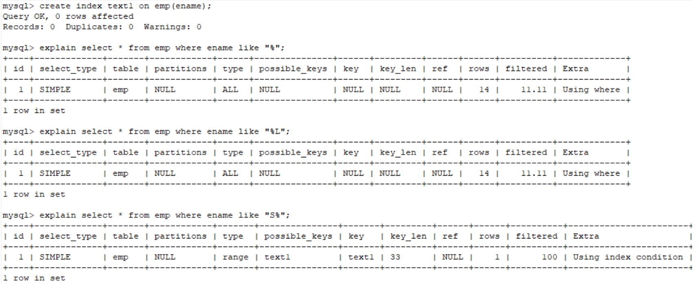
PS:
当真的需要两边都使用%来模糊查询时，只有当这个作为模糊查询的条件字段（例子中的name）以及所想要查询出来的数据字段（例子中的 id & name & age）都在索引列上时，才能真正使用索引，否则，索引失效全表扫描（比如多了一个 salary 字段）。我想，这应该就是 ‘覆盖索引（索引覆盖）’ 的本质吧。同时，这也能很好的证实 “尽量避免SELECT * 而是一一罗列出所需要查询的字段” 的道理吧，因为，搞不好 SELECT * 就多了一个字段，就导致了全表扫描。 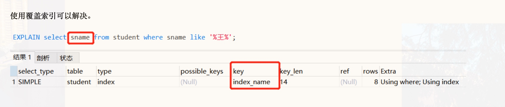 参考资料：https://www.bbsmax.com/A/mo5kk1rK5w/ or语句前后没有同时使用索引。当or左右查询字段只有一个是索引，该索引失效，只有当or左右查询字段均为索引时，才会生效
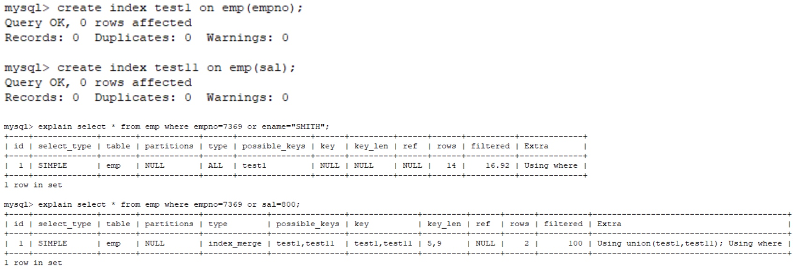组合索引，不是使用第一列索引，索引失效，即不满足最左匹配原则。
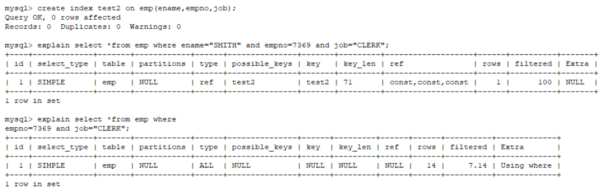数据类型出现隐式转化。如varchar不加单引号的话可能会自动转换为int型，使索引无效，产生全表扫描。
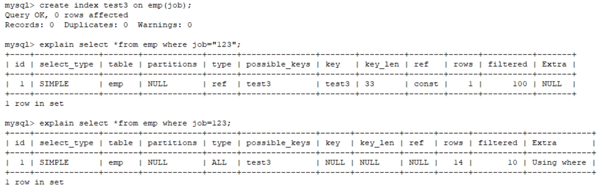在索引列上使用 IS NULL 或 IS NOT NULL操作。索引是不索引空值的，所以这样的操作不能使用索引，可以用其他的办法处理，例如：数字类型，判断大于0，字符串类型设置一个默认值，判断是否等于默认值即可。
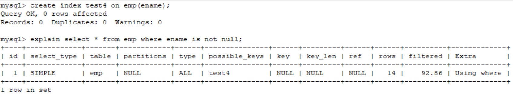在索引字段上使用not，<>，!=。不等于操作符是永远不会用到索引的，因此对它的处理只会产生全表扫描。 优化方法： key<>0 改为 key>0 or key<0。
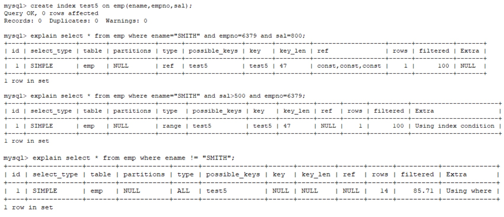对索引字段进行计算操作、字段上使用函数。（索引为 emp(ename,empno,sal)）
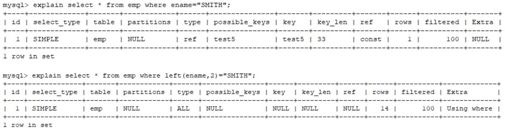当全表扫描速度比索引速度快时，mysql会使用全表扫描，此时索引失效。
3. 优化目标
根据explian中ref的字段，情况从好到坏顺序是
system > const > eq_ref > ref > fulltext > ref_or_null > index_merge > unique_subquery > index_subquery > range > index > ALL
比较常见的是const eq_ref ref range index all
通常需要将语句优化到index以上。
4. 引申知识
4.1. 回表查询
通常发生在select * 的查询下。在这种情况下，即使我们定义了很好的索引，where子句已经找到了他需要的数据。由于我们要查询*，也就是所有的数据。而这些数据没有存在索引表中，所以我们需要返回到聚集索引根据主键在查找一次才可以获取所需的信息。
应该要注意到，不只是select * 会触发回表操作，只要select的字段没有建立索引就会触发回表操作。
与回表查询相对应的是覆盖索引。
4.2. 覆盖索引
索引覆盖是一种避免回表查询的优化策略。具体的做法就是将要查询的数据作为索引列建立普通索引（可以是单列索引，也可以一个索引语句定义所有要查询的列，即联合索引），这样的话就可以直接返回索引中的的数据，不需要再通过聚集索引去定位行记录，避免了回表的情况发生。
如果一个索引覆盖（包含）了所有需要查询的字段的值，这个索引就是覆盖索引。因为索引中已经包含了要查询的字段的值，因此查询的时候直接返回索引中的字段值就可以了，不需要再到表中查询，避免了对主键索引的二次查询，也就提高了查询的效率。
要注意的是，不是所有类型的索引都可以成为覆盖索引的。因为覆盖索引必须要存储索引的列值，而哈希索引、空间索引和全文索引等都不存储索引列值，索引MySQL只能使用B-Tree索引做覆盖索引。
4.3. 索引下推
索引下推是一种数据库内的自我优化手段。有了索引下推优化，可以在有like条件查询的情况下，减少回表次数。
例如有这样一个语句:
select * from user_table where username like '张%' and age > 10
语句有两种执行可能：
根据（username,age）联合索引查询所有满足名称以“张”开头的索引，然后回表查询出相应的全行数据，然后再筛选出满足年龄小于等于10的用户数据
根据（username,age）联合索引查询所有满足名称以“张”开头的索引，然后直接再筛选出年龄小于等于10的索引，之后再回表查询全行数据。
明显的，第二种方式需要回表查询的全行数据比较少，这就是mysql的索引下推。
4.4. B+ Tree的优势
//TODO:
从使用fastjson替换springboot框架默认的json解析工具说起
1. 为什么要用fastjson替换jackson
1.在默认情况下我们在的情况下从返回的数据是
json格式但是在{key,value}中key的值当中用默认的Jackson返还回来会忽略大小写而我们要得到得是不忽略大小写得值因此我
们需要用FastJson替代默认得Jackson
2.我们通常现在为了更快捷得创建类,使用lombok插件得@Data注解生成类得getter,setter及构造方法.jackson是不支持json格式
序列化的,但是FastJson是可以做到这一点的
————————————————
版权声明：本文为CSDN博主「Alin_林」的原创文章，遵循 CC 4.0 BY-SA 版权协议，转载请附上原文出处链接及本声明。
原文链接：https://blog.csdn.net/weixin_44828552/article/details/89511350
2. 如何替换fastjson
常见的替换方法有以下两种
2.1. 方法一
@SpringBootApplication
public class HelloWorld implement ApplicationRunner{
public static void main(String[] args){
SpringApplication.run(HelloWorld.class,args);
}
@Bean
public HttpMessageConverters fastJsonHttpMessageConverters(){
//1.定义fastJson转换器
FastJsonHttpMessageConverter fastConverter=new FastJsonHttpMessageConverter();
FastJsonConfig fastJsonConfig=new FastJsonConfig();
fastJsonConfig.setSerializerFeatures(SerialzerFeature.WriteMapNullValue, SerializerFeature.WriteNullListAsEmpty);
fastConverter.setFastJsonConfig(fastJsonConfig);
HttpMessageConverter<?> converter = fastConverter;
return new HttpMessageConverters(converter);
}
}
2.2. 方法二
@Configuration
@EnableWebMvc
public class WebConfig implements WebMvcConfigurer {
@Override
public void configureMessageConverters(List<HttpMessageConverter<?>> converters) {
FastJsonHttpMessageConverter fastJsonConverter = new FastJsonHttpMessageConverter();
FastJsonConfig config = new FastJsonConfig();
config.setCharset(Charset.forName("UTF-8"));
// config.setDateFormat("yyyy-MM-dd'T'HH:mm:ss.SSSZ");
// config.setSerializerFeatures(SerializerFeature.WriteMapNullValue);
fastJsonConverter.setFastJsonConfig(config);
List<MediaType> list = new ArrayList<>();
list.add(MediaType.APPLICATION_JSON_UTF8);
fastJsonConverter.setSupportedMediaTypes(list);
converters.add(fastJsonConverter);
}
}
3. 发散分析
3.1. Jackson的新版本
网络上搜集替换jackson的理由，其中一点是jackson不支持忽略key大小写。
该点已经在2.5.0版本中解决。
ObjectMapper objectMapper = new ObjectMapper();
objectMapper.configure(MapperFeature.ACCEPT_CASE_INSENSITIVE_PROPERTIES, true);
CarInfo info = objectMapper.readValue(data, CarInfo.class);
或在配置文件中
spring.jackson.mapper.accept_case_insensitive_properties=true
3.2. 从替换fastjson，看springboot使用json解析器的逻辑
第二节中的两种方法都涉及到同一个类的使用，那就是FastJsonHttpMessageConverter和HttpMessageConverter。
将FastJsonHttpMessageConverter 添加到系统的HttpMessageConverter列表中，实际操作就是增加了一种json的解析方法，可以解析的media type是application-json，使用的解析器就是FastJsonHttpMessageConverter。
更多阅读
1. 三种json解析工具对比
fastjson这么快老外为啥还是热衷 jackson? https://blog.csdn.net/Amen_Wu/article/details/79129020
FastJSON、Gson和Jackson性能对比和共同缺点,注意事项
https://blog.csdn.net/qq_28572235/article/details/78604846
参考资料
https://mtyurt.net/post/jackson-case-insensitive-deserialization.html
https://blog.csdn.net/weixin_44828552/article/details/89511350
Copyright © 2015 Powered by MWeb, Theme used GitHub CSS.